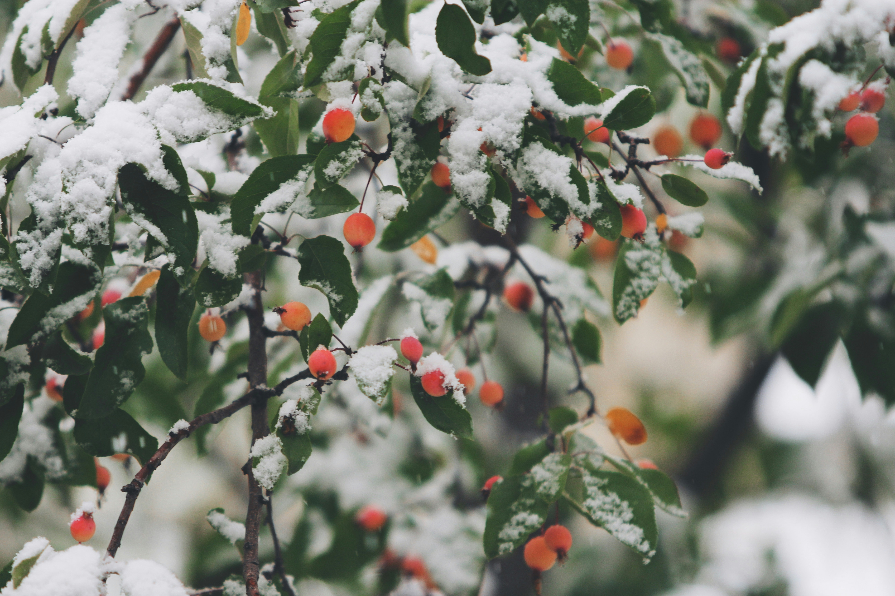

그렇게 아기 오리는 그 집을 떠나 다시 길을 나섰다. 물을 찾아 헤엄치고 물장구를 쳤지만, 살아 있는 동물들은 여전히 그를 못생겼다며 무시했다. 누구도 그가 어떤 마음으로 살아가는지 알려 하지 않았다.
가을이 되자 숲의 나뭇잎은 알록달록하게 물들고, 바람은 나뭇잎을 멀리 날려 보냈다. 날씨는 점점 추워졌고, 아기 오리는 추위에 몸을 떨었다.

“깍! 깍!”
그 무렵 어느 날 저녁, 갈대밭에서 아름다운 새 무리가 나타났다. 새하얀 깃털과 우아하고 긴 목을 가진 백조들이었다. 그들은 따뜻한 땅을 향해 웅장한 날개를 펼치며 하늘 높이 날아올랐다. 아기 오리는 그처럼 아름다운 새를 본 적이 없었다. 그는 백조들이 사라질 때까지 바라보았고, 자신도 모르게 목을 길게 빼고 이상한 소리를 냈다.
아기 오리는 백조들이 어디로 가는지 알지 못했다. 다만 그들을 사랑하게 되었다는 사실만은 분명했다. 하지만 자신 같은 못생긴 오리가 저토록 아름다운 새들을 꿈꿀 수 있을 리 없다고 생각했다. 다른 오리들이 자신을 견뎌 주기만 해도 고마울 따름이었다.
겨울은 점점 혹독해졌다. 물이 얼지 않도록 밤낮으로 헤엄쳐야 했지만, 물속의 빈 공간은 갈수록 작아졌다. 마침내 아기 오리는 너무 지쳐 얼음 속에 꽁꽁 얼어붙고 말았다. 아침 일찍 그곳을 지나던 농부가 얼음을 깨고 아기 오리를 구해 집으로 데려갔다.